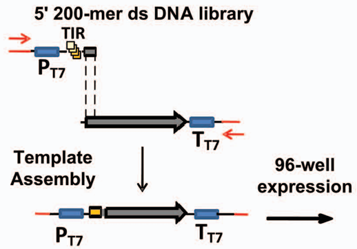
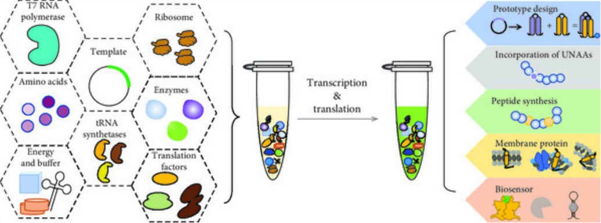

Loading...

Engineering
Cure Module
AbTAC function verification module
Personal Protective Equipment (PPE) Compliance:
Cycle 1: Functional verification of each antibody
Design1
We obtained highly specific monoclonal phage, and obtained scFv antibody genes of RNF43 and SRD5A2 by sequencing. SnugDock was used to optimize the antibody-antigen flexible docking. In this cycle, we need to use Linker to fuse the antibody to the N-terminal part of GFP and the antigen to the C-terminal part of GFP to verify the effectiveness of each antibody by bimolecular fluorescence complemency (BiFC) technology, since the antibody may have non-specific binding to the antigen after fusion with the phage coat protein.
Build1
To verify the role of each antibody, we decided to build the following genetic pathways:

Test1
(1) Screening and identification of positive clones: culture with selected media according to the resistance genes of plasmid vectors, or extract plasmid DNA for sequencing
(2) The target vector was transferred into Agrobacterium GV3101 by electroconversion and cultured at 30℃ for 2 days
(3) Agrobacterium solution containing N-fragment and C-fragment was mixed according to proportion, injected into tobzhuanhuaacco leaves together, and cultured under low light for 2 days
(4) The experimental results were observed and recorded by laser confocal microscopy
Study1
If these antibodies can bind to the antigen normally, it indicates that the general idea of protein fusion is no problem, and the next step can be integrated fusion. If the results do not meet expectations, a redesign or alternative solutions and feedback need to be found to optimize the experimental method before re-validation.
Cycle 2: Functional verification of Bispecific antibody
Design2
We putted the scFv antibody gene sequences against RNF43 and SRD5A2 into BLAST and searched for the human antibody sequences with the highest similarity, which were selected as the framework. The scFv sequences were fused with the constant region sequences to obtain the full-length IgG antibody genes, followed by KIH sequence modification (see in Design Page). We still chose to use the bimolecular fluorescence complementation (BiFC) technique for detection. However, this time, the nGFP and cGFP fragments were fused with the two antigen proteins, respectively. If our bispecific antibody has affinity for both antigens, the formation of a ternary complex will allow nGFP and cGFP to combine and produce fluorescence.
Build2
We constructed the following genetic pathways:

Test2
The basic steps are the same as in Cycle 1, but this time we designed two groups. The experimental group will be co-transfected with plasmids expressing the bispecific antibody gene and the two antigens, while the control group will only express the two antigens. The fluorescence intensity of the two groups will then be observed and recorded using laser confocal microscopy.
Study2
We expect that the fluorescence intensity in the experimental group will be significantly higher than that in the control group, which would indicate that our bispecific antibody has successfully bound to both antigens simultaneously. If the results do not meet expectations, a redesign or alternative solutions and feedback will be necessary to optimize the experimental method before re-validation.
Optimization of the Translational Initiation Region (TIR)
According to the research, translation initiation is the rate-limiting in cell-free synthesis[1]. So we tempt to optimize sequences in the translational initiation region (TIR) to improve expression efficiency[2].
Design
We designed a library of TIR (Translational Initiation Region) sequences featuring various point mutations. These mutations are situated within the 5' untranslated region (UTR), which can influence the binding of the ribosomal S1 protein. For the linear DNA template design, we created linear DNA templates approximately 200 base pairs (bp) in length. These templates contain the TIR sequence, a portion of the N - terminal antibody sequence, and the T7 terminator.
Build
We synthesized linear DNA fragments containing different TIR sequences. Through the overlap extension PCR technique, we connected the TIR sequence with the 3' end open reading frame (ORF) of the antibody fragment and the T7 terminator to generate a complete expression template. Subsequently, this template was expressed in a cell-free system.
Test
High - throughput expression testing was carried out in 96 - well plates. The designed linear DNA templates were utilized for cell - free synthesis reactions. The expression yield of the antibody fragment was monitored via the [14C] - leucine incorporation method to evaluate the translation efficiency of different TIR sequences.
Study
We analyzed the expression yields of different TIR sequences to determine the optimal TIR sequence.

[1] Zawada JF, Yin G, Steiner AR, Yang J, Naresh A, Roy SM, et al. Microscale to manufacturing scale-up of cell-free cytokine production—a new approach for shortening protein production development timelines. Biotechnol Bioeng. 2011;108:1570–1578. doi:10.1002/bit.23103.
[2] Yin G, Garces ED, Yang J, Zhang J, Tran C, Steiner AR, Roos C, Bajad S, Hudak S, Penta K, Zawada J, Pollitt S, Murray CJ. Aglycosylated antibodies and antibody fragments produced in a scalable in vitro transcription-translation system. MAbs. 2012 Mar-Apr;4(2):217-25. doi:10.4161/mabs.4.2.19202. Epub 2012 Mar 1. PMID: 22377750; PMCID: PMC3361657.
Searching for a better cell-free protein synthesis system
Design
We used E. coli lysates for cell-free protein synthesis in our initial design. Since bacterial lysates contain proteases and nucleases, which may decrease the production of target antibodies through partial degradation of foreign genes or expression products, new cell-free protein synthesis systems need to be applied. The "PURE" system for in vitro synthesis of proteins using only purified components of transcription and translation elements has been commercialized. All the components of the system are known, and there are no proteases and nucleases[2]. In order to verify whether the "PURE" system can improve the efficiency of AbTac antibody synthesis in this project, we designed a comparative experiment: One group used the original E. coli cleavage system for antibody protein production, and the other group used the PURE system (purchased from PURExpress, New England Biolabs. Experiments were conducted according to its instructions).

Figure 3: The components and applications of the PURE system[i]
Build
We successfully created two cell-free protein synthesis systems. In order to make the experimental results independent of other factors such as concentration, we controlled the concentration of the key enzymes of the two systems (T7 RNA polymerase, aminoacyl tRNA synthetases, E. coli ribosomes) and energy substances to be the same, and the experiment is carried out under the same reaction conditions, reaction time, and container.
Test
The proteins produced by the two systems were purified by size exclusion chromatography (SEC). SDS-PAGE electrophoresis was performed to estimate the antibody proteins produced by the two systems by comparing the gray level of the antibody protein bands with the known concentration of the standard product bands.
Learn
The test found that the antibody protein production of the PURE system was higher than that of the E. coli cell-free expression system, indicating that this system (without protease and nuclease) had a great effect on improving the antibody production. PURE cell-free protein synthesis system is suitable for mass production of AbTac, but the high price of PURE limits its application. Considering that the PURE system is too expensive, in order to save costs, our project finally adopted the E. coli lysate system to produce AbTac. But this comparative experiment pointed out a new direction for future production increase, that is, to reduce the nuclease and protease activity in the cell-free protein synthesis system.
LGrowth Module
Optimization of Codons in Expression Systems
We will apply multiple methods to optimize the codons of the expression systems. The optimization methods include eliminating rare codons, adjusting the GC content, enhancing mRNA stability, and optimizing secondary structures. Experimental results have shown that after codon optimization, the expression levels of genes have significantly increased, providing an important foundation for effective protein expression.
- Eliminating rare codons: Analyze the host genome and the codons commonly used by the host for protein translation. Replace rare codons with the most suitable codons commonly used by Escherichia coli.
- Adjusting GC content: The GC content in the gene sequence has an impact on gene expression and regulation. Through codon optimization, the GC content can be adjusted to adapt to the level of Escherichia coli.
- Increasing mRNA stability: The stability of mRNA directly affects the translation efficiency. By modifying some structural elements in the gene sequence, such as the 5' and 3' untranslated regions, the half-life of mRNA can be increased, thereby improving stability.
- Optimizing secondary structures: The secondary structure of mRNA affects the binding of ribosomes and the translation efficiency. In specific regions, especially the translation initiation region, avoid forming overly large or overly stable secondary structures to facilitate the smooth translation by ribosomes.
References
[i] Cui Y, Chen XJ, Wang Z. Cell-Free PURE System: Evolution and Achievements[J]. Biodes Res, 2022: 9847014.